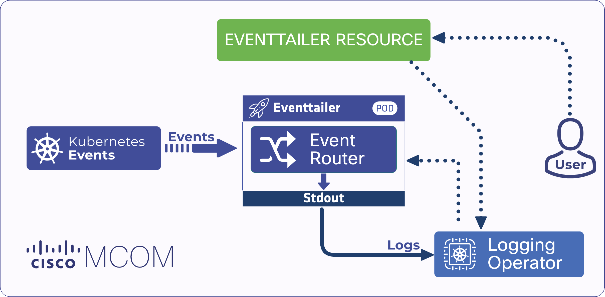
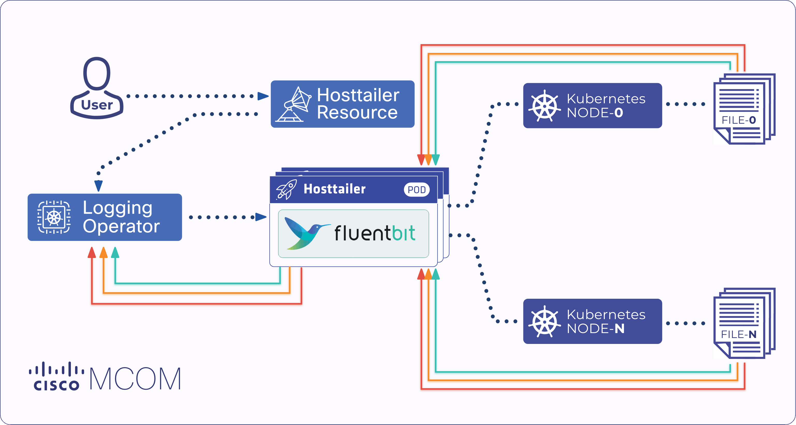
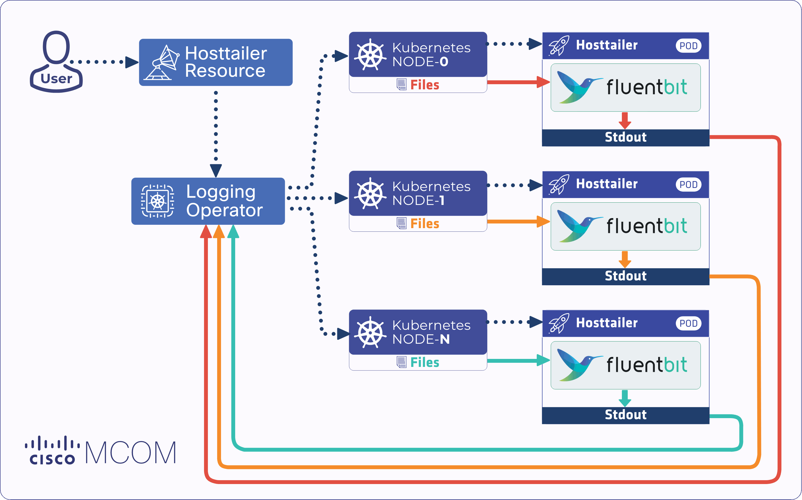

This is the multi-page printable view of this section.
Click here to print.
Return to the regular view of this page.
Kubernetes events, node logs, and logfiles
The Logging extensions part of the Logging operator solves the following problems:
- Collect Kubernetes events to provide insight into what is happening inside a cluster, such as decisions made by the scheduler, or why some pods were evicted from the node.
- Collect logs from the nodes like
kubelet logs. - Collect logs from files on the nodes, for example,
audit logs, or the systemd journal. - Collect logs from legacy application log files.
Starting with Logging operator version 3.17.0, logging-extensions are open source and part of Logging operator.
Features
Logging-operator handles the new features the well-known way: it uses custom resources to access the features. This way a simple kubectl apply with a particular parameter set initiates a new feature. Extensions supports three different custom resource types:
-
Logging-operator handles the new features the well-known way: it uses custom resources to access the features. This way a simple kubectl apply with a particular parameter set initiates a new feature. Extensions supports three different custom resource types:
-
Event-tailer listens for Kubernetes events and transmits their changes to stdout, so the Logging operator can process them.
-
Host-tailer tails custom files and transmits their changes to stdout. This way the Logging operator can process them.
Kubernetes host tailer allows you to tail logs like kubelet, audit logs, or the systemd journal from the nodes.
-
Tailer-webhook is a different approach for the same problem: parsing legacy application’s log file. Instead of running a host-tailer instance on every node, tailer-webhook attaches a sidecar container to the pod, and reads the specified file(s).
Check our configuration snippets for examples.
1 - Kubernetes Event Tailer
Kubernetes events are objects that provide insight into what is happening inside a cluster, such as what decisions were made by the scheduler or why some pods were evicted from the node. Event tailer listens for Kubernetes events and transmits their changes to stdout, so the Logging operator can process them.

The operator handles this CR and generates the following required resources:
- ServiceAccount: new account for
event-tailer - ClusterRole: sets the
event-tailer's roles - ClusterRoleBinding: links the account with the roles
- ConfigMap: contains the configuration for the
event-tailer pod - StatefulSet: manages the lifecycle of the
event-tailer pod, which uses the banzaicloud/eventrouter:v0.1.0 image to tail events
Create event tailer
-
The simplest way to init an event-tailer is to create a new event-tailer resource with a name and controlNamespace field specified. The following command creates an event tailer called sample:
kubectl apply -f - <<EOF
apiVersion: logging-extensions.banzaicloud.io/v1alpha1
kind: EventTailer
metadata:
name: sample
spec:
controlNamespace: default
EOF
-
Check that the new object has been created by running:
Expected output:
-
You can see the events in JSON format by checking the log of the event-tailer pod. This way Logging operator can collect the events, and handle them as any other log. Run:
kubectl logs -l app.kubernetes.io/instance=sample-event-tailer | head -1 | jq
The output should be similar to:
{
"verb": "UPDATED",
"event": {
"metadata": {
"name": "kube-scheduler-kind-control-plane.17145dad77f0e528",
"namespace": "kube-system",
"uid": "c2416fa6-7b7f-4a7d-a5f1-b2f2241bd599",
"resourceVersion": "424",
"creationTimestamp": "2022-09-13T08:19:22Z",
"managedFields": [
{
"manager": "kube-controller-manager",
"operation": "Update",
"apiVersion": "v1",
"time": "2022-09-13T08:19:22Z"
}
]
},
"involvedObject": {
"kind": "Pod",
"namespace": "kube-system",
"name": "kube-scheduler-kind-control-plane",
"uid": "7bd2c626-84f2-49c3-8e8e-8a7c0514b686",
"apiVersion": "v1",
"resourceVersion": "322"
},
"reason": "NodeNotReady",
"message": "Node is not ready",
"source": {
"component": "node-controller"
},
"firstTimestamp": "2022-09-13T08:19:22Z",
"lastTimestamp": "2022-09-13T08:19:22Z",
"count": 1,
"type": "Warning",
"eventTime": null,
"reportingComponent": "",
"reportingInstance": ""
},...
-
Once you have an event-tailer, you can bind your events to a specific logging flow. The following example configures a flow to route the previously created sample-eventtailer to the sample-output.
kubectl apply -f - <<EOF
apiVersion: logging.banzaicloud.io/v1beta1
kind: Flow
metadata:
name: eventtailer-flow
namespace: default
spec:
filters:
- tag_normaliser: {}
match:
# keeps data matching to label, the rest of the data will be discarded by this flow implicitly
- select:
labels:
app.kubernetes.io/name: sample-event-tailer
outputRefs:
- sample-output
EOF
Delete event tailer
To remove an unwanted tailer, delete the related event-tailer custom resource. This terminates the event-tailer pod. For example, run the following command to delete the event tailer called sample:
kubectl delete eventtailer sample && kubectl get pod
Expected output:
eventtailer.logging-extensions.banzaicloud.io "sample" deleted
NAME READY STATUS RESTARTS AGE
sample-event-tailer-0 1/1 Terminating 0 12s
Persist event logs
Event-tailer supports persist mode. In this case, the logs generated from events are stored on a persistent volume. Add the following configuration to your event-tailer spec. In this example, the event tailer is called sample:
kubectl apply -f - <<EOF
apiVersion: logging-extensions.banzaicloud.io/v1alpha1
kind: EventTailer
metadata:
name: sample
spec:
controlNamespace: default
positionVolume:
pvc:
spec:
accessModes:
- ReadWriteOnce
resources:
requests:
storage: 1Gi
volumeMode: Filesystem
EOF
Logging operator manages the persistent volume of event-tailer automatically, you don’t have any further task with it. To check that the persistent volume has been created, run:
kubectl get pvc && kubectl get pv
The output should be similar to:
NAME STATUS VOLUME CAPACITY ACCESS MODES STORAGECLASS AGE
sample-event-tailer-sample-event-tailer-0 Bound pvc-6af02cb2-3a62-4d24-8201-dc749034651e 1Gi RWO standard 43s
NAME CAPACITY ACCESS MODES RECLAIM POLICY STATUS CLAIM STORAGECLASS REASON AGE
pvc-6af02cb2-3a62-4d24-8201-dc749034651e 1Gi RWO Delete Bound default/sample-event-tailer-sample-event-tailer-0 standard 42s
Configuration options
For the detailed list of configuration options, see the EventTailer CRD reference.
2 - Kubernetes host logs, journals, and logfiles
Kubernetes host tailer allows you to tail logs like kubelet, audit logs, or the systemd journal from the nodes.

Create host tailer
To tail logs from the node’s host filesystem, define one or more file tailers in the host-tailer configuration.
kubectl apply -f - <<EOF
apiVersion: logging-extensions.banzaicloud.io/v1alpha1
kind: HostTailer
metadata:
name: multi-sample
spec:
# list of File tailers
fileTailers:
- name: nginx-access
path: /var/log/nginx/access.log
- name: nginx-error
path: /var/log/nginx/error.log
# list of Systemd tailers
systemdTailers:
- name: my-systemd-tailer
maxEntries: 100
systemdFilter: kubelet.service
EOF
Create file tailer
When an application (mostly legacy programs) is not logging in a Kubernetes-native way, Logging operator cannot process its logs. (For example, an old application does not send its logs to stdout, but uses some log files instead.) File-tailer helps to solve this problem: It configures Fluent Bit to tail the given file(s), and sends the logs to the stdout, to implement Kubernetes-native logging.

However, file-tailer cannot access the pod’s local dir, so the logfiles need to be written on a mounted volume.
Let’s assume the following code represents a legacy application that generates logs into the /legacy-logs/date.log file. While the legacy-logs directory is mounted, it’s accessible from other pods by mounting the same volume.
kubectl apply -f - <<EOF
apiVersion: v1
kind: Pod
metadata:
name: test-pod
spec:
containers:
- image: busybox
name: test
volumeMounts:
- mountPath: /legacy-logs
name: test-volume
command: ["/bin/sh", "-c"]
args:
- while true; do
date >> /legacy-logs/date.log;
sleep 1;
done
volumes:
- name: test-volume
hostPath:
path: /legacy-logs
EOF
To tail the logs of the previous example application, you can use the following host-tailer custom resource:
kubectl apply -f - <<EOF
apiVersion: logging-extensions.banzaicloud.io/v1alpha1
kind: HostTailer
metadata:
name: file-hosttailer-sample
spec:
fileTailers:
- name: sample-logfile
path: /legacy-logs/date.log
disabled: false
EOF
Logging operator configure the environment and start a file-tailer pod. It’s also able to deal with multi-node clusters, since is starts the host-tailer pod through a daemonset.
Check the created file tailer pod:
The output should be similar to:
NAME READY STATUS RESTARTS AGE
file-hosttailer-sample-host-tailer-5tqhv 1/1 Running 0 117s
test-pod 1/1 Running 0 5m40s
Checking the logs of the file-tailer's pod. You will see the logfile’s content on stdout. This way Logging operator can process those logs as well.
kubectl logs file-hosttailer-sample-host-tailer-5tqhv
The logs of the sample application should be similar to:
Fluent Bit v1.9.5
* Copyright (C) 2015-2022 The Fluent Bit Authors
* Fluent Bit is a CNCF sub-project under the umbrella of Fluentd
* https://fluentbit.io
[2022/09/13 12:26:02] [ info] [fluent bit] version=1.9.5, commit=9ec43447b6, pid=1
[2022/09/13 12:26:02] [ info] [storage] version=1.2.0, type=memory-only, sync=normal, checksum=disabled, max_chunks_up=128
[2022/09/13 12:26:02] [ info] [cmetrics] version=0.3.4
[2022/09/13 12:26:02] [ info] [sp] stream processor started
[2022/09/13 12:26:02] [ info] [output:file:file.0] worker #0 started
[2022/09/13 12:26:02] [ info] [input:tail:tail.0] inotify_fs_add(): inode=418051 watch_fd=1 name=/legacy-logs/date.log
Tue Sep 13 12:22:51 UTC 2022
Tue Sep 13 12:22:52 UTC 2022
Tue Sep 13 12:22:53 UTC 2022
Tue Sep 13 12:22:54 UTC 2022
Tue Sep 13 12:22:55 UTC 2022
Tue Sep 13 12:22:56 UTC 2022
File Tailer configuration options
| Variable Name | Type | Required | Default | Description |
| name | string | Yes | - | Name for the tailer
|
| path | string | No | - | Path to the loggable file
|
| disabled | bool | No | - | Disable tailing the file
|
| containerOverrides | *types.ContainerBase | No | - | Override container fields for the given tailer
|
Tail systemd journal
This is a special case of file-tailer, since it tails the systemd journal file specifically.
kubectl apply -f - <<EOF
apiVersion: logging-extensions.banzaicloud.io/v1alpha1
kind: HostTailer
metadata:
name: systemd-tailer-sample
spec:
# list of Systemd tailers
systemdTailers:
- name: my-systemd-tailer
maxEntries: 100
systemdFilter: kubelet.service
EOF
Systemd tailer configuration options
| Variable Name | Type | Required | Default | Description |
| name | string | Yes | - | Name for the tailer
|
| path | string | No | - | Override systemd log path
|
| disabled | bool | No | - | Disable component
|
| systemdFilter | string | No | - | Filter to select systemd unit example: kubelet.service
|
| maxEntries | int | No | - | Maximum entries to read when starting to tail logs to avoid high pressure
|
| containerOverrides | *types.ContainerBase | No | - | Override container fields for the given tailer
|
The following example uses the flow’s match term to listen the previously created file-hosttailer-sample Hosttailer’s log.
kubectl apply -f - <<EOF
apiVersion: logging.banzaicloud.io/v1beta1
kind: Flow
metadata:
name: hosttailer-flow
namespace: default
spec:
filters:
- tag_normaliser: {}
# keeps data matching to label, the rest of the data will be discarded by this flow implicitly
match:
- select:
labels:
app.kubernetes.io/name: file-hosttailer-sample
# there might be a need to match on container name too (in case of multiple containers)
container_names:
- nginx-access
outputRefs:
- sample-output
EOF
Example: Kubernetes host tailer with multiple tailers
kubectl apply -f - <<EOF
apiVersion: logging-extensions.banzaicloud.io/v1alpha1
kind: HostTailer
metadata:
name: multi-sample
spec:
# list of File tailers
fileTailers:
- name: nginx-access
path: /var/log/nginx/access.log
- name: nginx-error
path: /var/log/nginx/error.log
# list of Systemd tailers
systemdTailers:
- name: my-systemd-tailer
maxEntries: 100
systemdFilter: kubelet.service
EOF
Set custom priority
Create your own custom priority class in Kubernetes. Set its value between 0 and 2000000000. Note that:
- 0 is the default priority
- To change the default priority, set the
globalDefault key. - 2000000000 and above are reserved for the Kubernetes system
- PriorityClass is a non-namespaced object.
kubectl apply -f - <<EOF
apiVersion: scheduling.k8s.io/v1
kind: PriorityClass
metadata:
name: hosttailer-priority
value: 1000000
globalDefault: false
description: "This priority class should be used for hosttailer pods only."
EOF
Now you can use your private priority class name to start hosttailer/eventtailer, for example:
kubectl apply -f -<<EOF
apiVersion: logging-extensions.banzaicloud.io/v1alpha1
kind: HostTailer
metadata:
name: priority-sample
spec:
controlNamespace: default
# Override podSpecBase variables here
workloadOverrides:
priorityClassName: hosttailer-priority
fileTailers:
- name: nginx-access
path: /var/log/nginx/access.log
- name: nginx-error
path: /var/log/nginx/error.log
EOF
Configuration options
| Variable Name | Type | Required | Default | Description |
| fileTailers | []FileTailer | No | - | List of file tailers
|
| c | []SystemdTailer | No | - | List of systemd tailers
|
| enableRecreateWorkloadOnImmutableFieldChange | bool | No | - | EnableRecreateWorkloadOnImmutableFieldChange enables the operator to recreate the
fluentbit daemonset and the fluentd statefulset (and possibly other resource in the future)
in case there is a change in an immutable field
that otherwise couldn’t be managed with a simple update.
|
| workloadMetaOverrides | *types.MetaBase | No | - | Override metadata of the created resources
|
| workloadOverrides | *types.PodSpecBase | No | - | Override podSpec fields for the given daemonset
|
Advanced configuration overrides
| Variable Name | Type | Required | Default | Description |
| annotations | map[string]string | No | - | |
| labels | map[string]string | No | - | |
PodSpecBase
| Variable Name | Type | Required | Default | Description |
| tolerations | []corev1.Toleration | No | - | |
| nodeSelector | map[string]string | No | - | |
| serviceAccountName | string | No | - | |
| affinity | *corev1.Affinity | No | - | |
| securityContext | *corev1.PodSecurityContext | No | - | |
| volumes | []corev1.Volume | No | - | |
| priorityClassName | string | No | - | |
ContainerBase
| Variable Name | Type | Required | Default | Description |
| resources | *corev1.ResourceRequirements | No | - | |
| image | string | No | - | |
| pullPolicy | corev1.PullPolicy | No | - | |
| command | []string | No | - | |
| volumeMounts | []corev1.VolumeMount | No | - | |
| securityContext | *corev1.SecurityContext | No | - | |
3 - Tail logfiles with a webhook
The tailer-webhook is a different approach for the same problem: parsing legacy application’s log file. As an alternative to using a host file tailer service, you can use a file tailer webhook service.
While the containers of the host file tailers run in a separated pod, file tailer webhook uses a different approach: if a pod has a specific annotation, the webhook injects a sidecar container for every tailed file into the pod.

The tailer-webhook behaves differently compared to the host-tailer:
Pros:
- A simple annotation on the pod initiates the file tailing.
- There is no need to use
mounted volumes, Logging operator will manage the volumes and mounts between your containers.
Cons:
- Required to start the Logging operator with webhooks service enabled. This requires additional configuration, especially on certificates since webhook services are allowed over TLS only.
- Possibly uses more resources, since every tailed file attaches a new sidecar container to the pod.
Enable webhooks in Logging operator
We recommend using cert-manager to manage your certificates. Since using cert-manager is not part of this article, we assume you already have valid certs.
You will require the following things:
- a valid client certificate,
- a CA certificate, and
- a custom value.yaml file for your helm chart.
The following example refers to a Kubernetes secret named webhook-tls which is a self-signed certificate generated by cert-manager.
Add the following lines to your custom values.yaml or create a new file if needed:
env:
- name: ENABLE_WEBHOOKS
value: "true"
volumes:
- name: webhook-tls
secret:
secretName: webhook-tls
volumeMounts:
- name: webhook-tls
mountPath: /tmp/k8s-webhook-server/serving-certs
This will:
- Set
ENABLE_WEBHOOKS environment variable to true. This is the official way to enable webhooks in Logging operator. - Create a volume from the
webhook-tls Kubernetes secret. - Mount the
webhook-tls secret volume to the /tmp/k8s-webhook-server/serving-certs path where Logging operator will search for it.
Now you are ready to install Logging operator with the new custom values:
helm upgrade --install --wait --create-namespace --namespace logging -f operator_values.yaml logging-operator ./charts/logging-operator
Alternatively, instead of using the values.yaml file, you can run the installation from command line also by passing the values with the set and set-string parameters:
helm upgrade --install --wait --create-namespace --namespace logging --set "env[0].name=ENABLE_WEBHOOKS" --set-string "env[0].value=true" --set "volumes[0].name=webhook-tls" --set "volumes[0].secret.secretName=webhook-tls" --set "volumeMounts[0].name=webhook-tls" --set "volumeMounts[0].mountPath=/tmp/k8s-webhook-server/serving-certs" logging-operator ./charts/logging-operator
You also need a service which points to the webhook port (9443) of Logging operator, and where the mutatingwebhookconfiuration will point to. Running the following command in shell will create the required service:
kubectl apply -f - <<EOF
apiVersion: v1
kind: Service
metadata:
name: logging-webhooks
namespace: logging
spec:
ports:
- name: logging-webhooks
port: 443
targetPort: 9443
protocol: TCP
selector:
app.kubernetes.io/instance: logging-operator
type: ClusterIP
EOF
Furthermore, you need to tell Kubernetes to send admission requests to our webhook service. To do that, create a mutatingwebhookconfiguration Kubernetes resource, and:
- Set the configuration to call
/tailer-webhook path on your logging-webhooks service when v1.Pod is created. - Set
failurePolicy to ignore, which means that the original pod will be created on webhook errors. - Set
sideEffects to none, because we won’t cause any out-of-band changes in Kubernetes.
Unfortunately, mutatingwebhookconfiguration requires the caBundle field to be filled because we used a self-signed certificate, and the certificate cannot be validated through the system trust roots. If your certificate was generated with a system trust root CA, remove the caBundle line, because the certificate will be validated automatically.
There are more sophisticated ways to load the CA into this field, but this solution requires no further components.
For example: you can inject the CA with a simple cert-manager cert-manager.io/inject-ca-from: logging/webhook-tls annotation on the mutatingwebhookconfiguration resource.
kubectl apply -f - <<EOF
apiVersion: admissionregistration.k8s.io/v1
kind: MutatingWebhookConfiguration
metadata:
name: sample-webhook-cfg
namespace: logging
labels:
app: sample-webhook
webhooks:
- name: sample-webhook.banzaicloud.com
clientConfig:
service:
name: logging-webhooks
namespace: logging
path: "/tailer-webhook"
caBundle: $(kubectl get secret webhook-tls -n logging -o json | jq -r '.data["ca.crt"]')
rules:
- operations: [ "CREATE" ]
apiGroups: [""]
apiVersions: ["v1"]
resources: ["pods"]
scope: "*"
failurePolicy: Ignore
sideEffects: None
admissionReviewVersions: [v1]
EOF
Triggering the webhook
File tailer webhook is based on a Mutating Admission Webhook. It is called every time when a pod starts.
To trigger the webhook, add the following annotation to the pod metadata:
-
Annotation key: sidecar.logging-extensions.banzaicloud.io/tail
-
Value of the annotation: the filename (including path, and optionally the container) you want to tail, for example:
annotations: {"sidecar.logging-extensions.banzaicloud.io/tail": "/var/log/date"}
-
To tail multiple files, add only one annotation, and separate the filenames with commas, for example:
...
metadata:
name: test-pod
annotations: {"sidecar.logging-extensions.banzaicloud.io/tail": "/var/log/date,/var/log/mycustomfile"}
spec:
...
-
If the pod contains multiple containers, see Multi-container pods.
Note: If the pod with the sidecar annotation is in the default namespace, Logging operator handles tailer-webhook annotations clusterwide. To restrict the webhook callbacks to the current namespace, change the scope of the mutatingwebhookconfiguration to namespaced.
File tailer example
The following example creates a pod that is running a shell in infinite loop that appends the date command’s output to a file every second. The annotation sidecar.logging-extensions.banzaicloud.io/tail notifies Logging operator to attach a sidecar container to the pod. The sidecar tails the /legacy-logs/date.log file and sends its output to the stdout.
apiVersion: v1
kind: Pod
metadata:
name: test-pod
annotations: {"sidecar.logging-extensions.banzaicloud.io/tail": "/var/log/date"}
spec:
containers:
- image: debian
name: sample-container
command: ["/bin/sh", "-c"]
args:
- while true; do
date >> /var/log/date;
sleep 1;
done
- image: debian
name: sample-container2
...
After you have created the pod with the required annotation, make sure that the test-pod contains two containers by running kubectl get pod
Expected output:
NAME READY STATUS RESTARTS AGE
test-pod 2/2 Running 0 29m
Check the container names in the pod to see that the Logging operator has created the sidecar container called legacy-logs-date-log. The sidecar containers’ name is always built from the path and name of the tailed file. Run the following command:
kubectl get pod test-pod -o json | jq '.spec.containers | map(.name)'
Expected output:
[
"test",
"legacy-logs-date-log"
]
Check the logs of the test container. Since it writes the logs into a file, it does not produce any logs on stdout.
kubectl logs test-pod test; echo $?
Expected output:
Check the logs of the legacy-logs-date-log container. This container exposes the logs of the test container on its stdout.
kubectl logs test-pod legacy-logs-date-log
Expected output:
Fluent Bit v1.9.5
* Copyright (C) 2015-2022 The Fluent Bit Authors
* Fluent Bit is a CNCF sub-project under the umbrella of Fluentd
* https://fluentbit.io
[2022/09/15 11:26:11] [ info] [fluent bit] version=1.9.5, commit=9ec43447b6, pid=1
[2022/09/15 11:26:11] [ info] [storage] version=1.2.0, type=memory-only, sync=normal, checksum=disabled, max_chunks_up=128
[2022/09/15 11:26:11] [ info] [cmetrics] version=0.3.4
[2022/09/15 11:26:11] [ info] [sp] stream processor started
[2022/09/15 11:26:11] [ info] [input:tail:tail.0] inotify_fs_add(): inode=938627 watch_fd=1 name=/legacy-logs/date.log
[2022/09/15 11:26:11] [ info] [output:file:file.0] worker #0 started
Thu Sep 15 11:26:11 UTC 2022
Thu Sep 15 11:26:12 UTC 2022
...
Multi-container pods
In some cases you have multiple containers in your pod and you want to distinguish which file annotation belongs to which container. You can order every file annotations to particular container by prefixing the annotation with a ${ContainerName}: container key. For example:
...
metadata:
name: test-pod
annotations: {"sidecar.logging-extensions.banzaicloud.io/tail": "sample-container:/var/log/date,sample-container2:/var/log/anotherfile,/var/log/mycustomfile,foobarbaz:/foo/bar/baz"}
spec:
...
CAUTION:
- Annotations without containername prefix: the file gets tailed on the default container (container 0)
- Annotations with invalid containername: file tailer annotation gets discarded
| Annotation | Explanation |
| sample-container:/var/log/date | tails file /var/log/date in sample-container |
| sample-container2:/var/log/anotherfile | tails file /var/log/anotherfile in sample-container2 |
| /var/log/mycustomfile | tails file /var/log/mycustomfile in default container (sample-container) |
| foobarbaz:/foo/bar/baz | will be discarded due to non-existing container name |